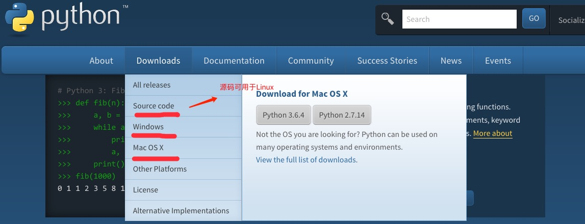
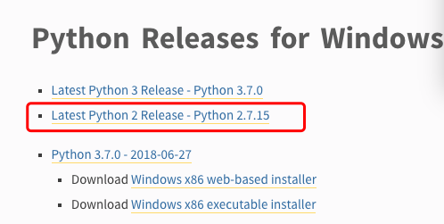
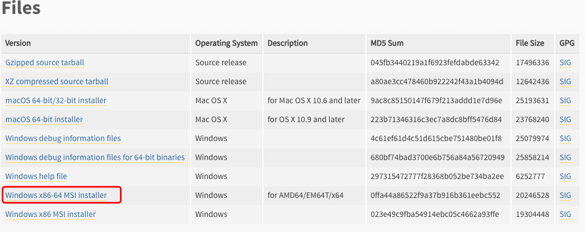
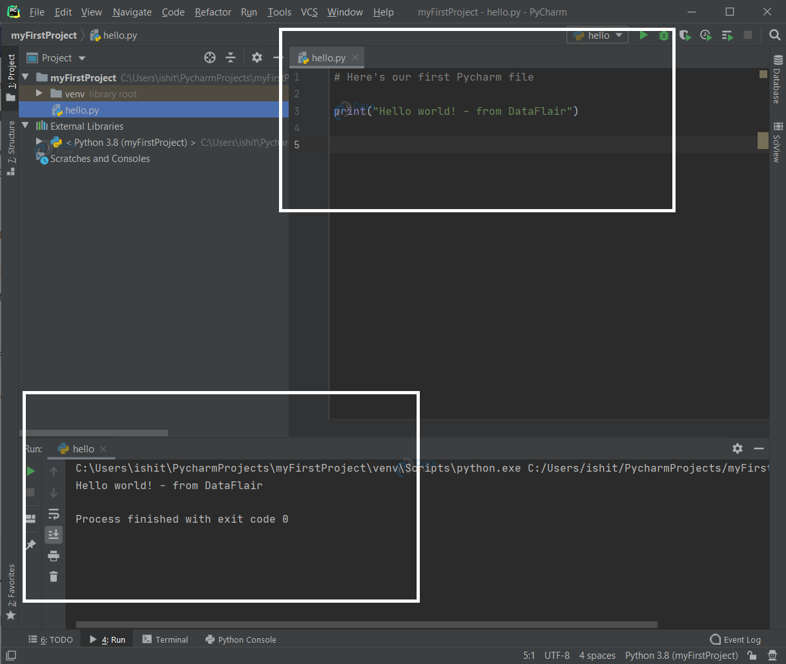
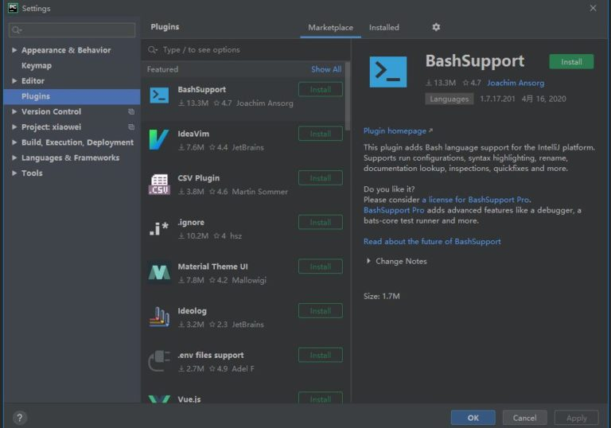

Python 环境搭建
Python 是一种跨平台的编程语言，能够在多种操作系统上运行。
本章节我们将向大家介绍如何在本地搭建 Python 开发环境。
Python 可应用于多平台，包括 Windows、Linux 和 Mac OS X。
你可以通过终端窗口输入 python 命令来查看本地是否已经安装 Python 以及 Python 的安装版本。
- Windows：包括 Windows 7 及以上版本。
- macOS：适用于所有主流 macOS 版本。
- Linux：几乎所有主流 Linux 发行版，如 Ubuntu、Debian、Fedora、CentOS 等。
- Unix：支持类 Unix 系统，如 FreeBSD、OpenBSD 等。
- 嵌入式系统：如 Raspberry Pi 等设备。
- 移动平台：通过特定框架（如 Kivy）支持 iOS 和 Android。
- 云平台：支持 AWS、Google Cloud、Azure 等云服务环境。
Python下载
Python 最新源码，二进制文档，新闻资讯等可以在 Python 的官网查看到：
Python 官网：https://www.python.org/
你可以在以下链接中下载 Python 的文档，你可以下载 HTML、PDF 和 PostScript 等格式的文档。
Python文档下载地址：https://www.python.org/doc/
Python安装
Python已经被移植在许多平台上（经过改动使它能够工作在不同平台上）。
您需要下载适用于您使用平台的二进制代码，然后安装Python。
如果您平台的二进制代码是不可用的，你需要使用C编译器手动编译源代码。
编译的源代码，功能上有更多的选择性， 为python安装提供了更多的灵活性。
以下是各个平台安装包的下载地址：

以下为不同平台上安装 Python 的方法：
Unix & Linux 平台安装 Python:
以下为在 Unix & Linux 平台上安装 Python 的简单步骤：
- 打开 WEB 浏览器访问https://www.python.org/downloads/source/
- 选择适用 于Unix/Linux 的源码压缩包。
- 下载及解压压缩包。
- 如果你需要自定义一些选项修改Modules/Setup
- 执行 ./configure 脚本
- make
- make install
执行以上操作后，Python 会安装在 /usr/local/bin 目录中，Python 库安装在 /usr/local/lib/pythonXX，XX 为你使用的 Python 的版本号。
Window 平台安装 Python:
以下为在 Window 平台上安装 Python 的简单步骤：
打开 WEB 浏览器访问https://www.python.org/downloads/windows/

- 在下载列表中选择Window平台安装包，包格式为：python-XYZ.msi 文件 ， XYZ 为你要安装的版本号。
要使用安装程序 python-XYZ.msi, Windows 系统必须支持 Microsoft Installer 2.0 搭配使用。只要保存安装文件到本地计算机，然后运行它，看看你的机器支持 MSI。Windows XP 和更高版本已经有 MSI，很多老机器也可以安装 MSI。

下载后，双击下载包，进入 Python 安装向导，安装非常简单，你只需要使用默认的设置一直点击"下一步"直到安装完成即可。
MAC 平台安装 Python:
MAC 系统一般都自带有 Python2.x版本 的环境，你也可以在链接 https://www.python.org/downloads/mac-osx/ 上下载最新版安装。
环境变量配置
程序和可执行文件可以在许多目录，而这些路径很可能不在操作系统提供可执行文件的搜索路径中。
path(路径)存储在环境变量中，这是由操作系统维护的一个命名的字符串。这些变量包含可用的命令行解释器和其他程序的信息。
Unix或Windows中路径变量为PATH（UNIX区分大小写，Windows不区分大小写）。
在Mac OS中，安装程序过程中改变了python的安装路径。如果你需要在其他目录引用Python，你必须在path中添加Python目录。
在 Unix/Linux 设置环境变量
- 在 csh shell: 输入
setenv PATH "$PATH:/usr/local/bin/python"
, 按下 Enter。 - 在 bash shell (Linux): 输入
export PATH="$PATH:/usr/local/bin/python"
，按下 Enter。 - 在 sh 或者 ksh shell: 输入
PATH="$PATH:/usr/local/bin/python"
, 按下 Enter。
注意: /usr/local/bin/python 是 Python 的安装目录。
在 Windows 设置环境变量
在环境变量中添加Python目录：
在命令提示框中(cmd) : 输入
path=%path%;C:\Python
按下 Enter。
注意: C:\Python 是Python的安装目录。
也可以通过以下方式设置：
- 右键点击"计算机"，然后点击"属性"
- 然后点击"高级系统设置"
- 选择"系统变量"窗口下面的"Path",双击即可！
- 然后在"Path"行，添加python安装路径即可(我的D:\Python32)，所以在后面，添加该路径即可。 ps：记住，路径直接用分号"；"隔开！
- 最后设置成功以后，在cmd命令行，输入命令"python"，就可以有相关显示。

Python 环境变量
下面几个重要的环境变量，它应用于Python：
| 变量名 | 描述 |
|---|---|
| PYTHONPATH | PYTHONPATH是Python搜索路径，默认我们import的模块都会从PYTHONPATH里面寻找。 |
| PYTHONSTARTUP | Python启动后，先寻找PYTHONSTARTUP环境变量，然后执行此变量指定的文件中的代码。 |
| PYTHONCASEOK | 加入PYTHONCASEOK的环境变量, 就会使python导入模块的时候不区分大小写. |
| PYTHONHOME | 另一种模块搜索路径。它通常内嵌于的PYTHONSTARTUP或PYTHONPATH目录中，使得两个模块库更容易切换。 |
运行Python
有三种方式可以运行Python：
1、交互式解释器：
你可以通过命令行窗口进入 Python，并在交互式解释器中开始编写 Python 代码。
你可以在 Unix、DOS 或任何其他提供了命令行或者 shell 的系统进行 Python 编码工作。
或者
C:>python # Windows/DOS
以下为Python命令行参数：
| 选项 | 描述 |
|---|---|
| -d | 在解析时显示调试信息 |
| -O | 生成优化代码 ( .pyo 文件 ) |
| -S | 启动时不引入查找Python路径的位置 |
| -V | 输出Python版本号 |
| -X | 从 1.6版本之后基于内建的异常（仅仅用于字符串）已过时。 |
| -c cmd | 执行 Python 脚本，并将运行结果作为 cmd 字符串。 |
| file | 在给定的python文件执行python脚本。 |
2、命令行脚本
在你的应用程序中通过引入解释器可以在命令行中执行Python脚本，如下所示：
或者
C:>python script.py # Windows/DOS
注意：在执行脚本时，请检查脚本是否有可执行权限。
3、集成开发环境（IDE：Integrated Development Environment）: PyCharm
PyCharm 是由 JetBrains 打造的一款 Python IDE，支持 macOS、 Windows、 Linux 系统。
PyCharm 功能 : 调试、语法高亮、Project管理、代码跳转、智能提示、自动完成、单元测试、版本控制……
PyCharm 下载地址 : https://www.jetbrains.com/pycharm/download/
PyCharm 安装地址：https://www.runoob.com/pycharm/pycharm-install.html

安装 PyCharm 中文插件，打开菜单栏 File，选择 Settings，然后选 Plugins，点 Marketplace，搜索 chinese，然后点击 install 安装：

在接下来的学习中请确保您的环境已搭建成功。
在以后的章节中给出的例子已在 Python2.7.6 版本测试通过。

shaonianruntu
514***496@qq.com
对于 Python 学习的新手来说，安装 Anaconda 包管理软件是一个不错的选择，可以减少很多后续安装 Python 各种包的麻烦。在 Anaconda 自带的 notebook 进行代码的编写要比 IDE 和 Terminal 的体验好得多。
Windows 如果使用终端进行 Python 编程时，建议对终端进行一定的美化。
shaonianruntu
514***496@qq.com
shaonianruntu
514***496@qq.com
如果需要使用 Pycharm 又恰好是学生的话，可以免费申请享用高大上的Professional版本。
在填写学校邮箱申请完成后，会收到一封激活邮件。点击链接激活后会收到一封包含下载地址链接的邮件，就可以享用 Jetbrains 的所有专业软件了。
shaonianruntu
514***496@qq.com
白幽幽
100***129.com
汉化包下载链接：https://github.com/pingfangx/jetbrains-in-chinese
在 pycharm 项目有汉化包
下载后放在 安装目录/lib/ 下，重启 pycharm 即是中文
白幽幽
100***129.com
雷雷
139***68707@163.com
参考地址
mac安装py3 (身为一个优秀的程序员必须要配个mac)
1、安装/更新 brew [不知道brew的点进去了解一下](https://brew.sh/index_zh-cn)
2、安装py3
3、由于mac在安装xcode时候会默认安装python2 所以需要改一下配置
(为啥不删除python2因为我胆小,为啥不用python2应为我喜欢新版本)
打开 配置文件
增加配置信息(下面是我配置信息 路径自己改改)
刷新一下文件信息(不刷新的话 不会立即生效)
查看py版本
再推荐一个开发工具vscode [官方下载地址]( https://code.visualstudio.com/ )
优点: 强大、开源、免费(狠重要)、插件多
雷雷
139***68707@163.com
参考地址